* 1 - Cria a pasta com o nome do indicador e vai ser criado automático um arquivo base para o indicador.
* 2 - Deleta a pasta do indicador.
* 3 - Deleta arquivos referentes a input e arquivos .txt.
* 4 - Edita arquivos conforme a aba selecionada, envia o conteúdo para o editor de código 15.
* 5 - Exporta a pasta do indicador fazendo um backup, assim pode compartilhar o indicador.
* 6 - Nova função, será salvo no diretório 'Functions'.
* 7 - Visualiza de onde esta editando o arquivo.
* 8 - Salva as alterações na pasta visível no campo 7.
* 9 - Código base para criar arquivo de input.
* Obs: Selecionar a aba Indicator e ir no campo 4 selecionando o arquivo do indicador para obter o caminho da pasta e então alterar para a aba Input e utilizar o botão para importar o exemplo de código.
* 10 - Limpar texto no editor de código 15 e também limpa o campo 7.
* 11 - Importar pasta com indicador, será salvo direto no diretório Indicators do projeto.
* 12 - Limpa os campos selecionados.
* 13 - Campo de pesquisa dinâmico, ao digitar alguma palavra aparecerá o total encontrado e destacará no código.
* 14 - Cada aba serve para salvar o arquivo com o seu nome correto seguindo um padrão necessário e também ao utilizar o botão 10 importar o código de exemplo correto.
* 15 - Editor de código com coloração de sintaxe.
* 16 - Seleção de símbolo para utilizar com o log.
* 17 - Abre a tela de log.
* 18 - Salva o log inserido no indicador.
* 19 - Com a aba Input selecionada e conteúdo no campo 15, abre a tela de input para visualizar as alterações.
Utilizando a tela de criação de indicador
* Funcionamento interno.
** Ao criar o indicador ou input, ele será renomeado com o prefixo _ind__ ou _inp__
** Nunca utilize no começo do nome de uma função esses prefixos, os nomes de funções estão livres e pode utilizar o prefixo func para diferenciar os arquivos na hora de manipular eles.
** Ao criar código com editor externo, nome de classe principal do indicador deve iniciar com o prefixo Ind e no caso de classe para input deve iniciar com o prefixo Inp.
* Obs: Pode renomear o nome da classe desde que mantenha o prefixo Ind ou Inp.
Mas se renomear a pasta do indicador ou o arquivo, precisa manter um padrão de nome como na imagem.
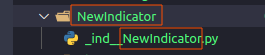
* Dica:Crie os arquivos pelo editor padrão do projeto e depois pode utilizar seu editor preferido exportando a pasta em questão.1º Criando um indicador
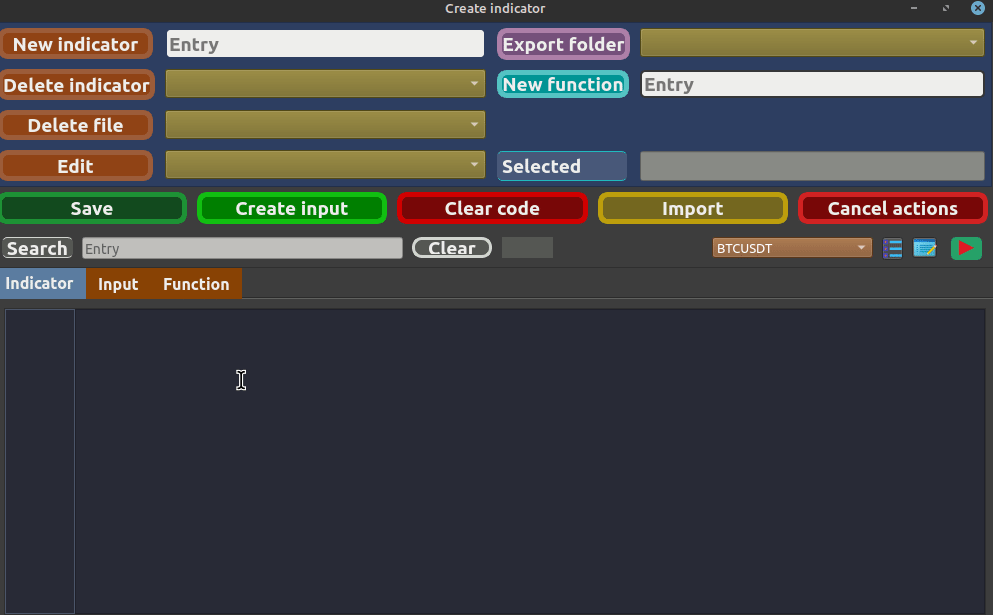
* Obs: Observe a mensagem de confirmação com o nome do indicador, porém ele internamente foi renomeado com o começo _ind__.
Isso é necessário para poder encontrar de forma automática os novos indicadores criados.
Caso crie um arquivo com algum editor externo, mantenha o padrão do nome do indicador com o começo _ind__YourIndicator ou _inp__YourInput.2º Criando um input3º Editando indicador, input ou função* Obs: Escolha uma aba, o campo Edit vai mostrar apenas os arquivos referêntes a aba selecionada.4º Deletando pasta do indicador ou arquivoIndicator:
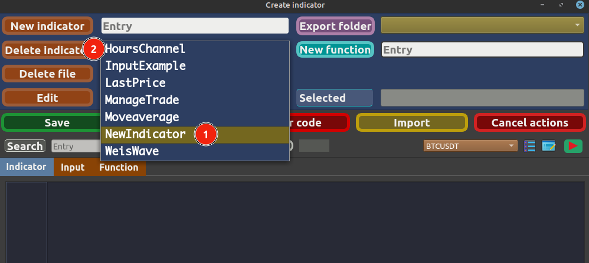
File:
* Obs: Deleta tanto arquivo .py quanto arquivo de configuração .txt.
- Arquivos __ind__ não estão visíveis para deletar, precisa utilizar o botão Delete Indicator
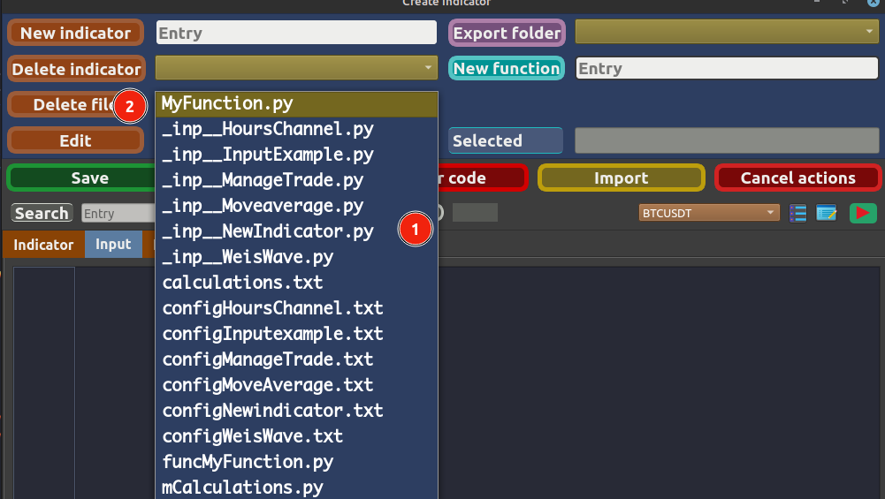
5º Criando uma função
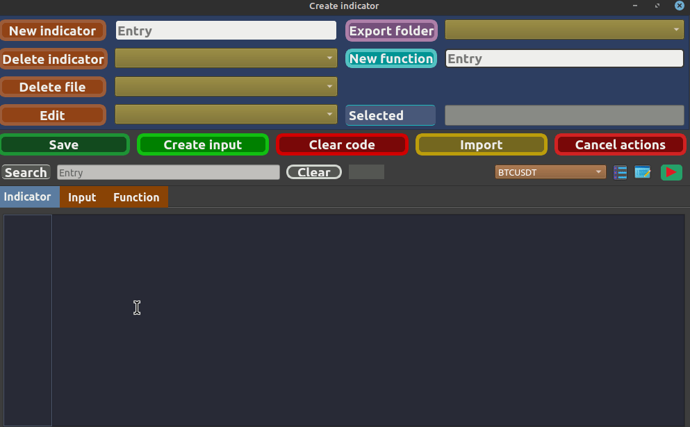
6º Exportando pasta
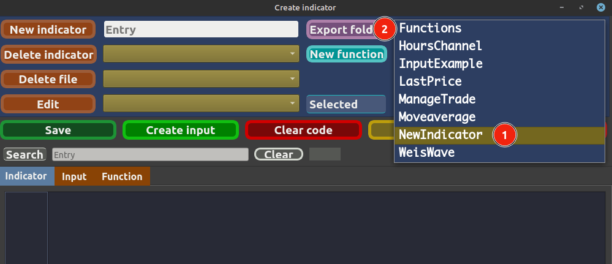
* Obs: Exporta pasta de indicador e pasta que contém funções.
- Ao importar utilizar apenas as pastas de indicadores porque serão salva direto no diretório Indicators do projeto.
7º CLEARS8º Busca de texto
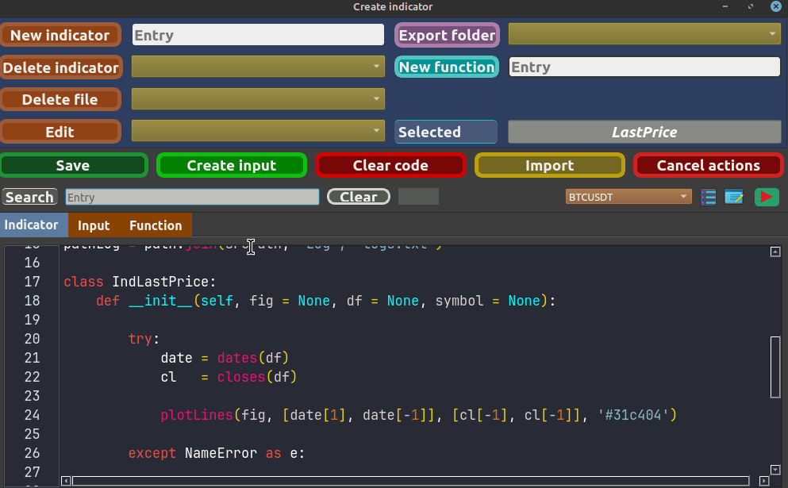
9º LOGS
* 1 - Cria a pasta com o nome do indicador e vai ser criado automático um arquivo base para o indicador. * 2 - Deleta a pasta do indicador. * 3 - Deleta arquivos referentes a input e arquivos .txt. * 4 - Edita arquivos conforme a aba selecionada, envia o conteúdo para o editor de código 15. * 5 - Exporta a pasta do indicador fazendo um backup, assim pode compartilhar o indicador. * 6 - Nova função, será salvo no diretório 'Functions'. * 7 - Visualiza de onde esta editando o arquivo. * 8 - Salva as alterações na pasta visível no campo 7. * 9 - Código base para criar arquivo de input. * Obs: Selecionar a aba Indicator e ir no campo 4 selecionando o arquivo do indicador para obter o caminho da pasta e então alterar para a aba Input e utilizar o botão para importar o exemplo de código. * 10 - Limpar texto no editor de código 15 e também limpa o campo 7. * 11 - Importar pasta com indicador, será salvo direto no diretório Indicators do projeto. * 12 - Limpa os campos selecionados. * 13 - Campo de pesquisa dinâmico, ao digitar alguma palavra aparecerá o total encontrado e destacará no código. * 14 - Cada aba serve para salvar o arquivo com o seu nome correto seguindo um padrão necessário e também ao utilizar o botão 10 importar o código de exemplo correto. * 15 - Editor de código com coloração de sintaxe. * 16 - Seleção de símbolo para utilizar com o log. * 17 - Abre a tela de log. * 18 - Salva o log inserido no indicador. * 19 - Com a aba Input selecionada e conteúdo no campo 15, abre a tela de input para visualizar as alterações. Utilizando a tela de criação de indicador * Funcionamento interno. ** Ao criar o indicador ou input, ele será renomeado com o prefixo _ind__ ou _inp__ ** Nunca utilize no começo do nome de uma função esses prefixos, os nomes de funções estão livres e pode utilizar o prefixo func para diferenciar os arquivos na hora de manipular eles. ** Ao criar código com editor externo, nome de classe principal do indicador deve iniciar com o prefixo Ind e no caso de classe para input deve iniciar com o prefixo Inp. * Obs: Pode renomear o nome da classe desde que mantenha o prefixo Ind ou Inp. Mas se renomear a pasta do indicador ou o arquivo, precisa manter um padrão de nome como na imagem. 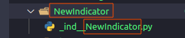 * Dica: Crie os arquivos pelo editor padrão do projeto e depois pode utilizar seu editor preferido exportando a pasta em questão. 1º Criando um indicador 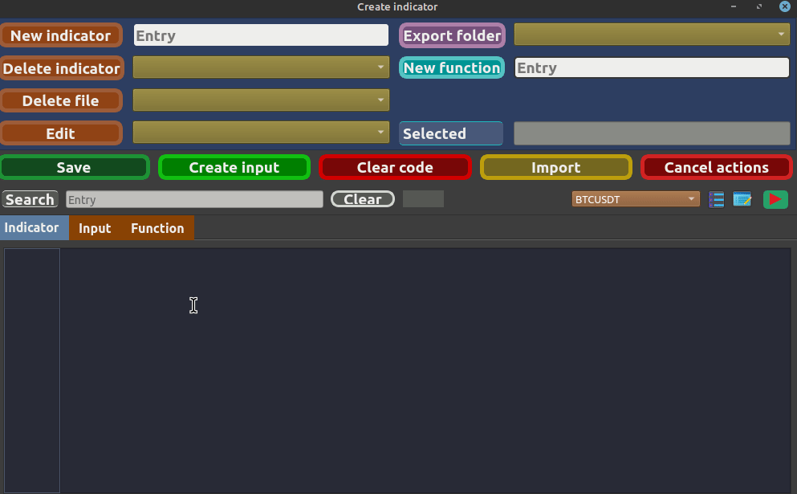 * Obs: Observe a mensagem de confirmação com o nome do indicador, porém ele internamente foi renomeado com o começo _ind__. Isso é necessário para poder encontrar de forma automática os novos indicadores criados. Caso crie um arquivo com algum editor externo, mantenha o padrão do nome do indicador com o começo _ind__YourIndicator ou _inp__YourInput. 2º Criando um input 3º Editando indicador, input ou função * Obs: Escolha uma aba, o campo Edit vai mostrar apenas os arquivos referêntes a aba selecionada.
4º Deletando pasta do indicador ou arquivo Indicator: 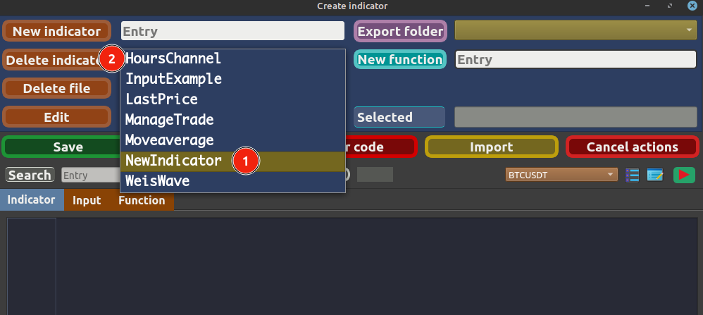 File: * Obs: Deleta tanto arquivo .py quanto arquivo de configuração .txt. - Arquivos __ind__ não estão visíveis para deletar, precisa utilizar o botão Delete Indicator 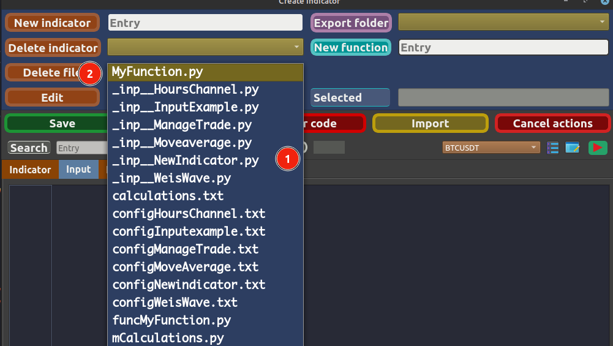 5º Criando uma função 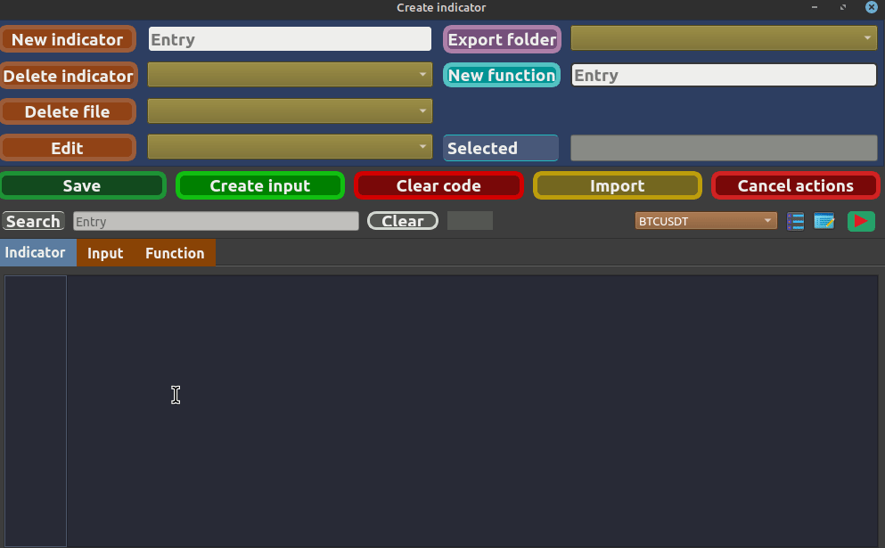 6º Exportando pasta 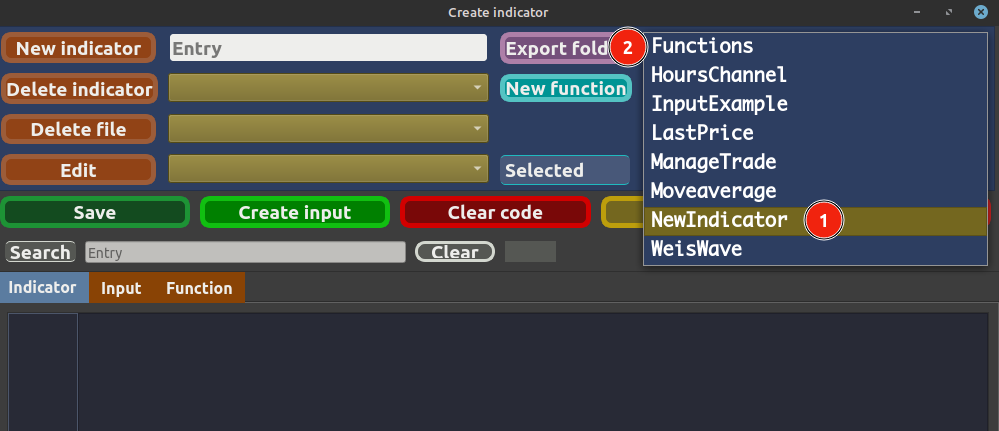 * Obs: Exporta pasta de indicador e pasta que contém funções. - Ao importar utilizar apenas as pastas de indicadores porque serão salva direto no diretório Indicators do projeto. 7º CLEARS 8º Busca de texto 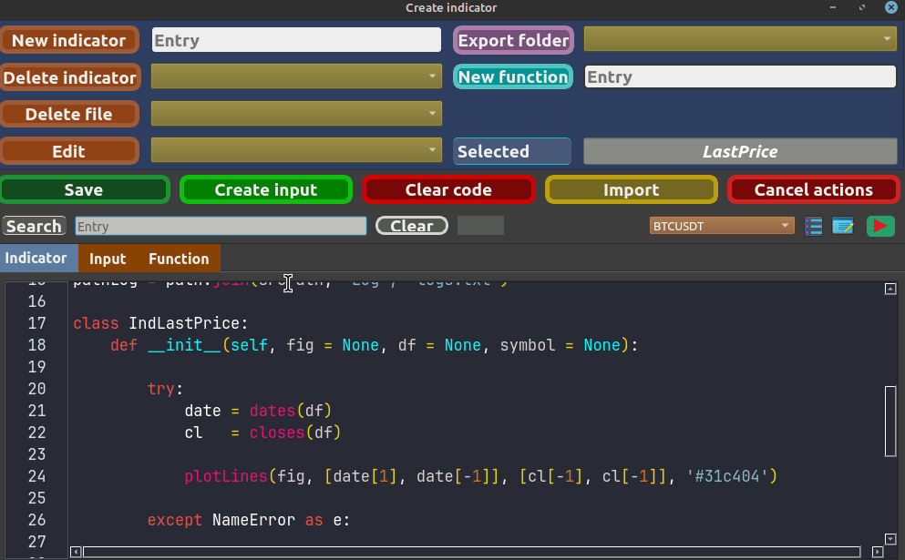 9º LOGS